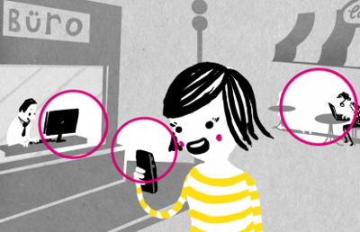

The internet, liberated.

Problems of today's internet
(excerpt)
- Centralization: large corporations control the network
- Mass surveillance: everyone is being spied on
- Expensive: excludes parts of society
- Slow expansion: non-urban areas are cut off
What is Freifunk?
A self-organized part of the internet that you build with your community
How does Freifunk work?
Router icon by Sergey Demushkin, CC-BY
How does Freifunk work?
Router icon by Sergey Demushkin, CC-BY
How does Freifunk work?
Router icon by Sergey Demushkin, CC-BY
How does Freifunk work?
Router icon by Sergey Demushkin, CC-BY
How does Freifunk work?
Router icon by Sergey Demushkin, CC-BY
How does Freifunk work?
Router icon by Sergey Demushkin, CC-BY
How does Freifunk work?
Router icon by Sergey Demushkin, CC-BY
How does Freifunk work?
Router icon by Sergey Demushkin, CC-BY
Why Freifunk?
- Owned by the community
- Resilient: decentralized mesh network
- Share internet access
- Net neutrality: no censorship
- Meet awesome people
How does Freifunk work?



Berlin community
Berlin community

Berlin's newcomers

Impact on society
- Started as hacker experiment
- Turns out: useful for entire society
- Everybody can participate: use, learn, build, teach, ...
- Free software: communities around the world collaborate
- I know all my Freifunk neighbors!
The future
- Make network infrastructure a common
- Help for societies that suffer from censorship
- Build the internet you want!
- Idea is made for copy-pasting – no permission required ☺